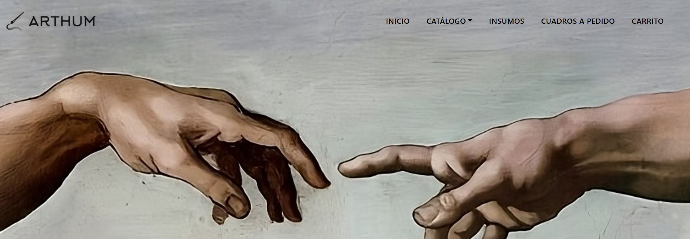
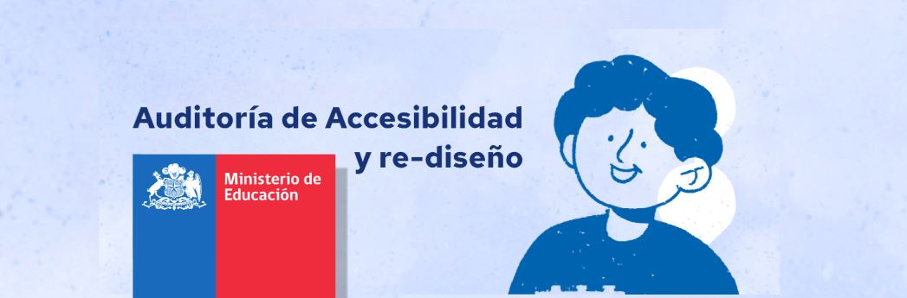

Rediseño enfocado en mejorar jerarquía visual, navegación y percepción del sitio.
Trabajo
Casos de estudio

Modernización completa de e-commerce enfocada en destacar obras y mejorar exploración.

Sitio completo con enfoque en contenido, interacción y experiencia para fans.

Rediseño basado en estándares WCAG 2.1, mejorando legibilidad y navegación.